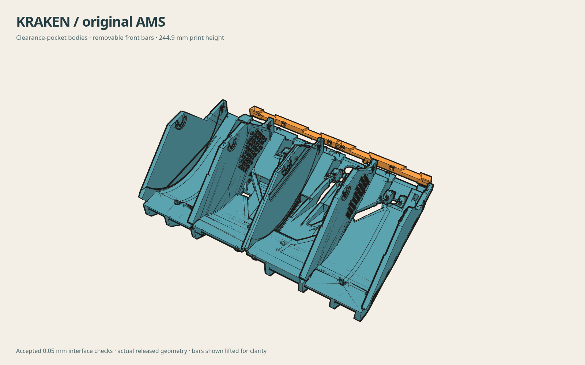
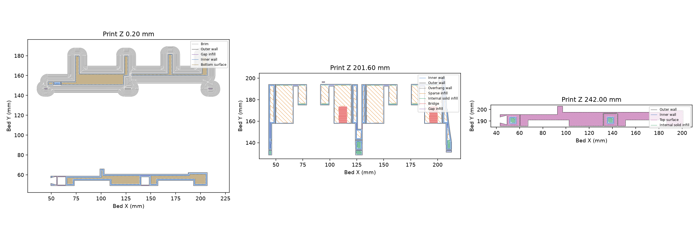
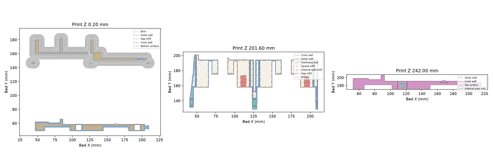
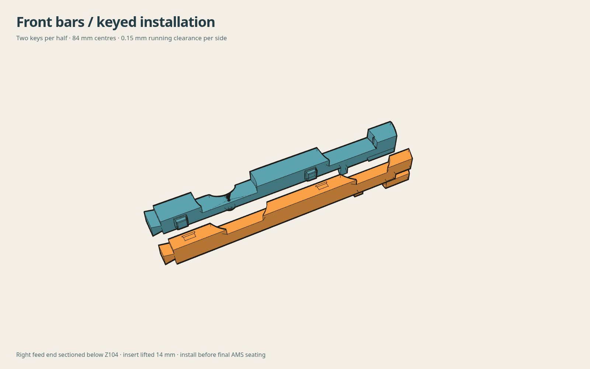
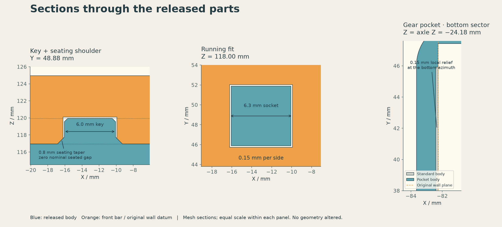

ORIGINAL BAMBU LAB AMS · OCTOBER 16, 2026
Kraken bodies with local infill reinforcement
Two upright bodies and removable front bars, with dense material around the seats, fasteners and key roots. The rest prints at 2 walls and 15% infill.

01 / DOWNLOAD THE PLATES
Prepared for Bambu P1S, 0.4 mm hardened-steel nozzle and Polymaker ASA. Each body plate includes its matching flat front bar and editable reinforcement modifiers. Confirm the printer, material, loaded AMS slot and clear bed before sending. Other machines require reslicing and review.
| Plate | Estimate | Download |
|---|---|---|
| Left body + front bar | 12h44m · 281.63 g | Left sliced 3MF |
| Right body + front bar | 12h47m · 280.78 g | Right sliced 3MF |
| Four 84 mm fit coupons | 52 min · about 12 g | Fit-check 3MF |
The dated release includes the full package and SHA-256 checksums. Asset identities · Complete printable instructions. The supplied G-code contains the custom retraction limiter. Stock Orca reslicing may lose that behavior.
Cardboard spools and spool gears: Repro's spool rings, nut and gear generator makes centering rings for any spool hole from 45 to 95 mm in 0.1 mm steps, lists ready-made sizes for Polymaker, Elegoo, eSun and Bambu spools, thickens the spool nut flange and cuts custom spoke patterns into humebeam's spool gear.
For other body versions, centering rings, fit coupons and the eight-spoke gear, use the CAD library. Those older geometry-only files remain available unchanged.
02 / PRINT SETTINGS & LOCAL REINFORCEMENT
Body
2 walls / 15% rectilinear overall. Seat, fastener and key-root masks use 4 walls / 100%. Selected wall-path masks use 4 walls / 15%. Dense masks take precedence where they overlap.
Front bar
4 walls / 30% rectilinear throughout. Print flat on its broad mating face. The bar and body keep their 84 mm key pitch along the same bed axis.
| Nozzle / textured bed | 260 / 95 °C · 10-minute heat soak |
|---|---|
| Layers / flow | 0.20 mm · flow ratio 0.95 · 12 mm³/s cap |
| Acceleration | 5,000 mm/s² print/travel; 500 first layer; 2,000 top surfaces |
| Adhesion | 8 mm outer body brim, 0.15 mm gap; no bar brim |
| Supports / prime tower | Off / off · single material |
| Cooling | Part 0–20%, overhang 30%; aux and chamber exhaust off during deposition |
| Retraction | 0.8 mm; soft guard 3 cycles per 1 mm fresh filament; hard minimum 0.3 mm fresh extrusion |
| Scaling | 100% shrink setting; zero hole/contour compensation |
Keep each upright body and its modifiers together. Body height is 244.9 mm. The printable underside uses ramps and revised channels to remove broad unsupported ledges while retaining the mechanical interfaces. Keep the enclosure stable, avoid drafts and allow the plate to cool naturally. The brim helps adhesion; it cannot guarantee full-height flatness.




03 / FIT & ASSEMBLE
- Check the small coupons. Both keys must enter together by hand and the shoulders must sit flush. The zero-gap seating tapers matter more than whether a single key enters. Coupons do not reproduce full-height warp.
- Cool and inspect the large parts. Check locating faces for bow, socket roofs for sag and layers for cracks. Clear loose strings; do not reshape interfaces or force hardware through thin blind stops.
- Fit hardware with the bars absent. Join the two halves, fit the feeders and rollers, and route cables and PTFE using the original Kraken guide.
- Set the assembly loosely in the AMS. Keep box tabs disengaged and fasteners loose. Leave board retention free where it crosses the split.
- Seat both front bars. Both shoulders must meet fully by hand. Then engage the box tabs, seat the frame and finish fastening. Do not use screws to pull warped surfaces straight.
- Check loaded operation. Add spools progressively; rotate and feed in every bay. Check rubbing, cable slack and capture, then inspect seating again after 24 hours.


04 / WHAT THE CHECKS ESTABLISH
109/109 right and 101/101 left hardware checks pass at the documented 0.05 mm CAD scope. RFID pocket protection, joint paths, locating surfaces and reinforcement containment pass. The accepted library and original reinforcement masks remain unchanged.
The final straight-bridge screen finds a maximum 5.95 mm free interval with geometric support at both ends. Short infill endpoints inside earlier wall paths were reviewed separately. About 3.47 million sampled extrusion-path points pass the nominal-geometry screen; this does not predict actual bead sag or printed clearance.
The net-section assessment supports local reinforcement for an unheated indoor AMS with up to two 2 kg spools per half under the recorded load assumptions. Whole-body FEA did not converge, so no physical stiffness gain or safety factor is claimed. Do not carry a loaded tub by its front bars, keys or feeders.
The complete package contains the baseline/local/reference slice comparisons, profiles, geometry and reopening checks, path evidence and physical acceptance checklist. Read the repository guide and validation notes.
05 / ALL KRAKEN PARTS, TOOLS & SOURCES
Everything in Repro’s Kraken remix for the original AMS, in one list. The original Kraken design is by humebeam; follow the upstream guide for the full kit and hardware.
| Collection | What it contains |
|---|---|
| Ring, nut and gear generator | Centering rings for any spool hole from 45 to 95 mm in 0.1 mm steps, a thicker-flange spool nut and custom spoked gears, built in the browser. |
| Pentagon flange pairs, every stock size | Matched cap and gear rings for 45–95 mm cardboard-spool centre holes, in 1 mm steps. |
| Brand-specific ring pairs and size guide | The 55.5 mm Polymaker and 53.4 mm Elegoo pairs, plus which size to print for other brands. |
| Round gear-side flanges | Earlier 45–95 mm round centering rings with wider flanges. |
| Eight-spoke spool gear | The replacement gear with the original teeth, hub and bearing seats, plus its source and comparative evidence. |
| Reloadable Bambu-refill spool prototype | Two added parts for the eight-spoke gear and stock nut. Installed drive clearance, real-core fit and clamping remain unverified. |
| Replacement bodies and front bars | The four selected parts as 3MF models and STEP solids. |
| All body versions | Standard or gear-pocket walls; full-height one-piece bodies or shortened bodies with bars. |
| Front-bar fit coupons | Single-key clearance samples and 84 mm two-key alignment pairs. |
| ASA print release | The ready-sliced P1S plates, fit-check plate and complete print package from section 01. |
| Engineering notes | Bay widths, gear clearances, interfaces and the load assumptions behind the reinforcement. |
| Validation report | The hardware-interface checks, RFID pocket protection and toolpath screens summarised in section 04. |
| Reconstruction and reinforcement method | How the bodies were rebuilt from STL measurements as editable CAD and reinforced with helper bodies. |
| Source repository | Every model, source script, checksum and reproduction record for this remix. |
| Kraken by humebeam | The original design, its hardware list and build guide. |